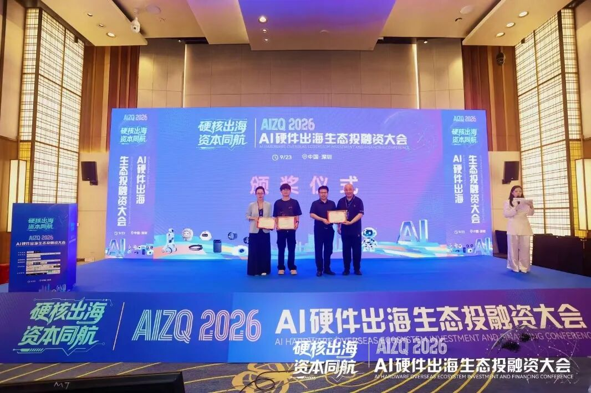
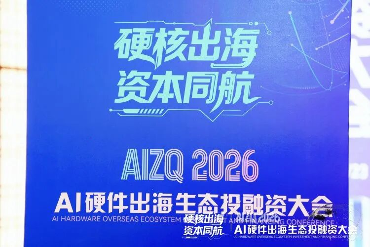

喜报！
2026年9月23日，广东·深圳。
【硬核出海·资本同航】AIZQ2026 AI硬件出海生态投融资大会隆重举行。「超级球球」AI儿童成长陪伴机器人亮相大会项目路演，从众多优质项目中脱颖而出，荣获路演第一名！

【硬核出海·资本同航】AI硬件出海生态投融资大会于9月23日在深圳南山举办，由AI硬件圈与AIZQ知穹传媒主办，聚焦“出海 × 资本”双主线，覆盖AI陪伴、AI可穿戴、机器人、AIoT/运动健康四大赛道。
大会设置 16+ 优质项目闭门路演、30+ 头部投资机构现场点评，汇聚腾讯云、亚马逊云科技等头部服务商，搭建产业、技术、资本三方对接平台。

路演现场，超级有爱CEO元晓帅博士围绕产品力、商业化路径与全球化规划进行了完整展示。超级球球凭借扎实的技术积累与清晰的市场打法，超级球球AI儿童成长陪伴机器人获得现场评委与投资机构的一致认可，最终摘得桂冠。
路演现场，超级球球的展示与答辩环节提问不断——从儿童情感AI的技术实现，到海外市场的落地节奏，评委与投资人的追问一个接一个。有投资人评价：“它不是在回答孩子，是在理解孩子。”也有人表示，能把儿童情感AI讲得这么清楚、这么落地的项目并不多见，会后多位投资人主动找到团队深入交流。
超级球球AI机器人由超级有爱（杭州）智能科技有限公司自主研发。
超级球球为无屏毛绒形态 AI 机器人，面向 3–12 岁儿童，依托自研儿童情感 AI 系统，可感知语音与触感信号，识别情绪、共情倾听、引导表达，长期跟踪成长状态，助力儿童情绪能力、表达能力、抗挫力培养。
本次大会以"硬核出海·资本同航"为主题，汇聚AI硬件产业链上下游与一线投资机构。
本次斩获桂冠，是超级球球发展历程中的又一座里程碑。依托过往积累的多项成果，超级球球将借助资本的力量，持续加速海外市场布局，走向更广阔的全球舞台。